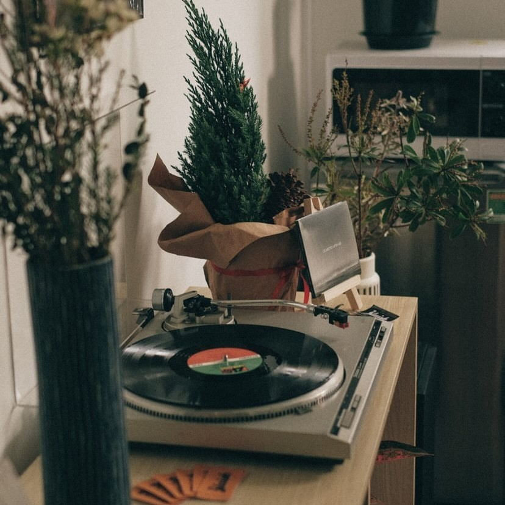

About us

CỚ SAO LẠI NGHIỆN ANALOG?
Thi thoảng, tôi lại nhớ thời xưa bé, cảm giác bất giác nghe âm thanh phát ra từ chiếc radio cũ kỹ, đó là bài “tủ” của đài FM thời đó, Careless Whisper của George Michael. Song tôi lại thích nghe Modern Talking từ chiếc máy đĩa than Denon cũ mèm của bố tôi, mà nhớ in đến đoạn “You’re my heart, you’re my soul” điệp khúc cực xịn đó, lại vấp i xì đùng. Đó là một chiếc đĩa cũ, kỉ niệm của bố tôi sau chặng đường lao động nhiều năm tại Liên Xô cũ.
Dĩ nhiên tôi vẫn nghe những bản nhạc đó trên Spotify hoặc Youtube, chốn này nhạc gì cũng có mà, từ cũ đến mới, chẳng vấp điệu nào, nhưng đâu đó tôi vẫn chưa cảm được rõ rệt như hồi ấy.
Từ đó, Bluish Records ra đời. Như một nơi để trốn, như một chốn để tìm. Là một trải nghiệm sâu lắng, chậm rãi giữa nhịp sống vồn vã ngoài kia, tôi mảy may chẳng thể nào tìm được cảm giác ấy. Tôi nghiện sưu tầm quá khứ, tôi nghiện analog, còn bạn thì sao?